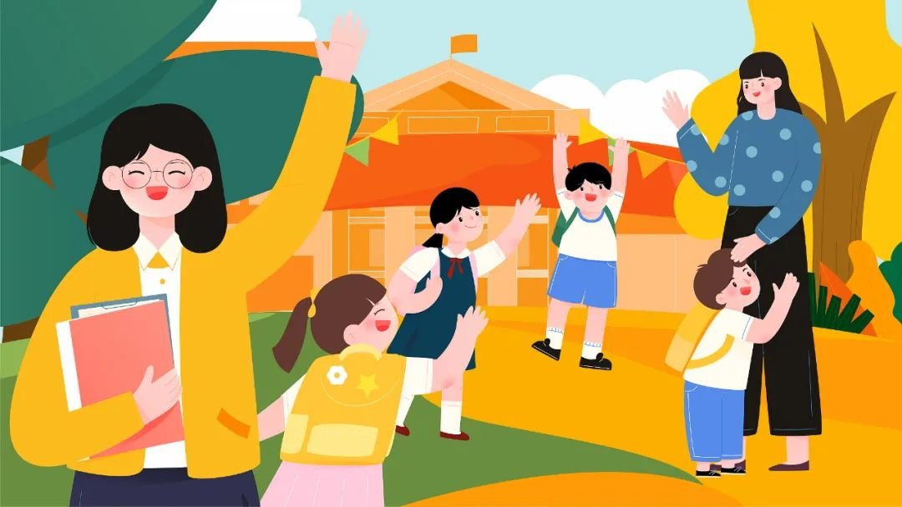
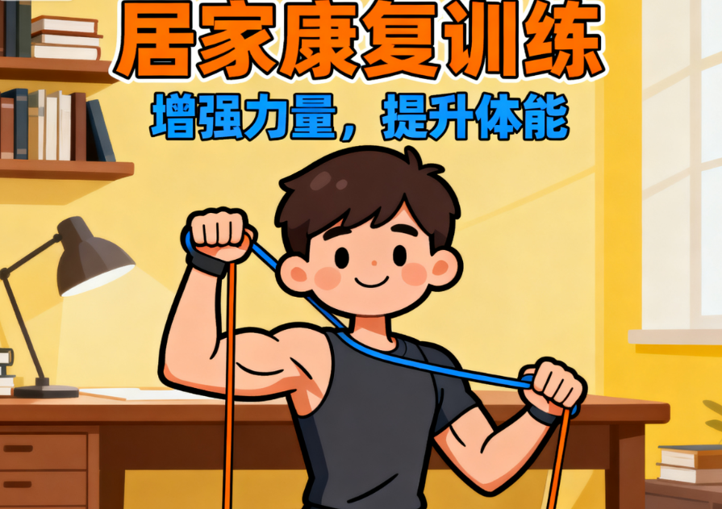
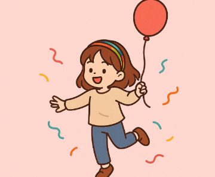

早期干预
0-3岁早期干预实用指南
涵盖感官训练、语言启蒙、社交能力培养等核心内容，附每周可执行训练计划，帮助家长科学开展家庭干预。

教育支持
特殊教育学校选择指南
详解学校评估维度、师资配置标准、课程设置要求，提供择校流程清单和家长避坑指南。
 医疗健康
医疗健康
唐氏综合征健康管理手册
包含生长发育监测、常见疾病预防、营养膳食建议，由儿科专家联合编写的权威医学指南。
家长指南
家长心理调适与情绪管理
帮助家长应对压力与情绪波动，建立积极心态，更好地支持孩子成长。

早期干预
居家康复训练视频课程
由专业康复师录制的系列视频，包含大运动、精细动作等训练方法。

教育支持
社交技能培养活动手册
帮助孩子发展社交能力的实用活动设计，适合家庭和学校使用。